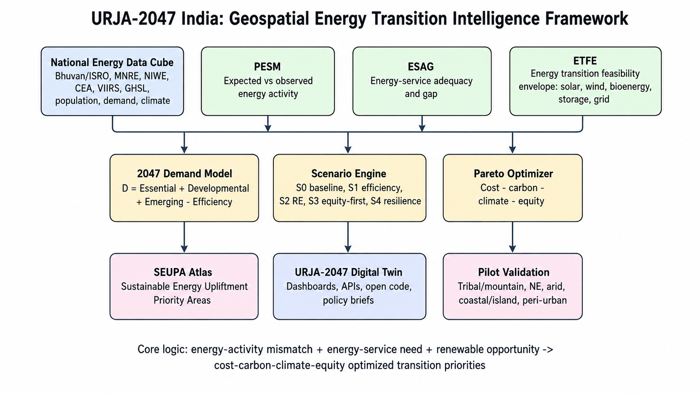
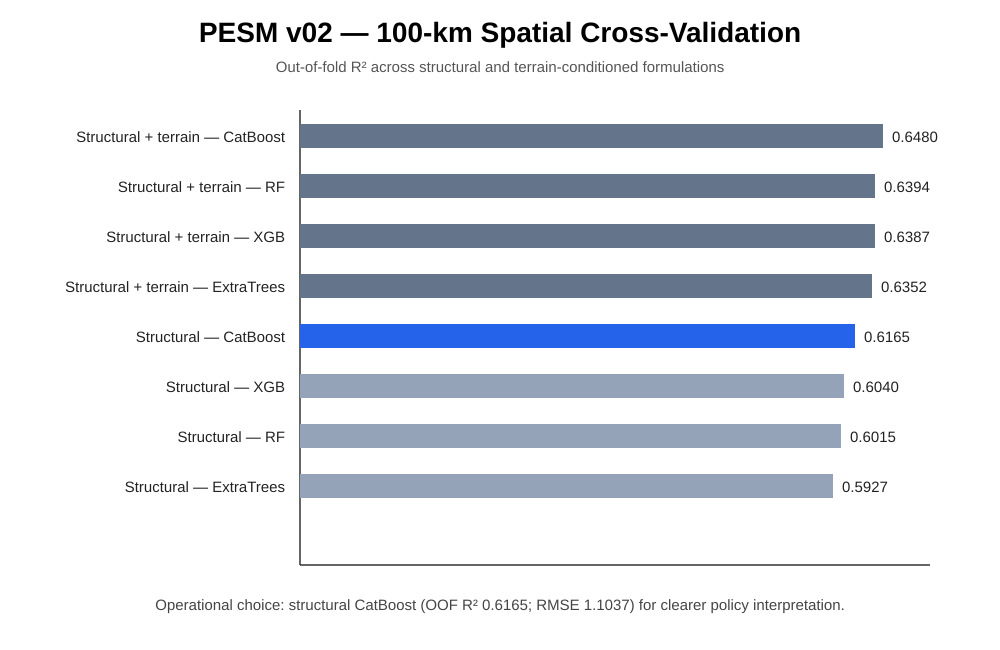
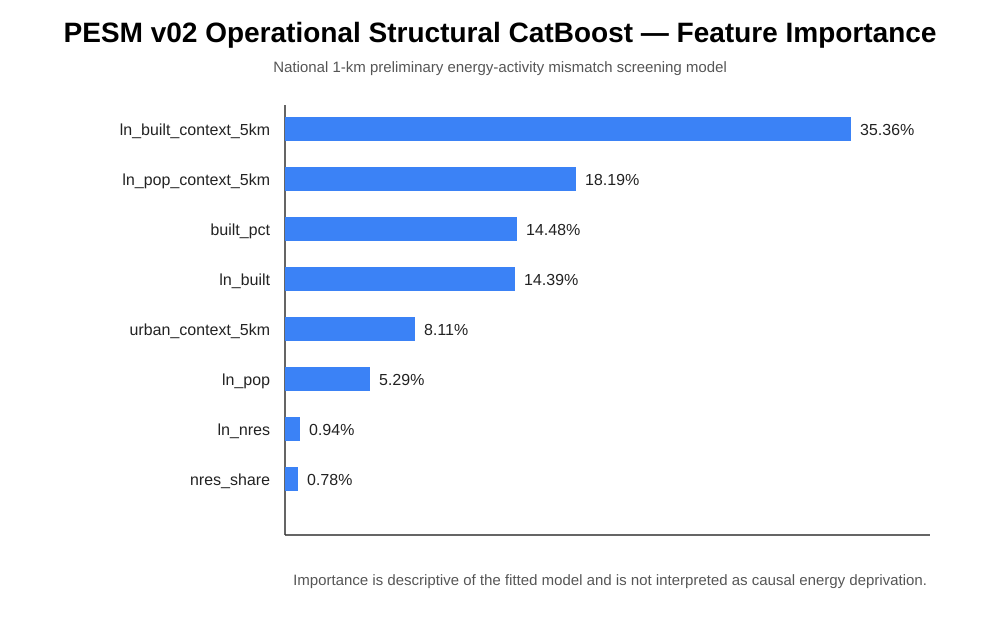
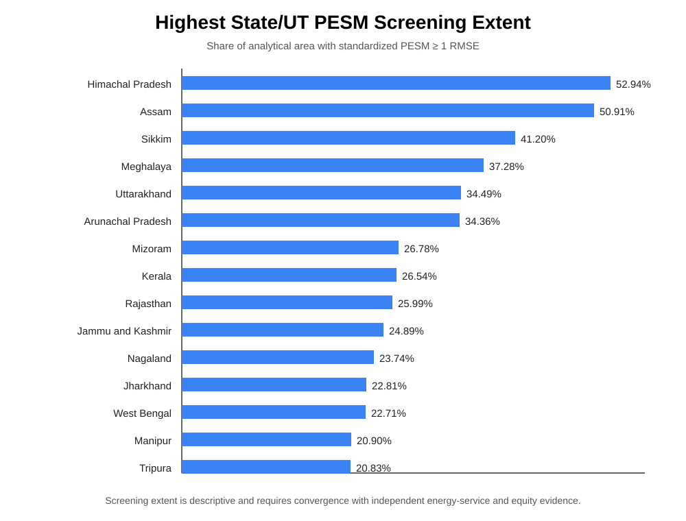

National Energy Data Cube
Foundation of the programme. Harmonise Bhuvan/ISRO, MNRE, NIWE, CEA, PPAC, demographic, Earth-observation, infrastructure and climate evidence on a national 1-km analytical backbone with finer pilot grids.
URJA-2047 integrates Earth observation, official Indian energy statistics, geospatial AI, renewable-resource screening, energy-service need, infrastructure constraints and multi-objective optimisation into decision-ready evidence for Viksit Bharat 2047.
Cross-cutting decision dimensions: COST · CARBON · CLIMATE · EQUITY
valid national 1-km analytical cells
PESM ≥ 1 spatial-CV RMSE
PESM ≥ 2 spatial-CV RMSE
structural CatBoost spatial OOF R²
spatial-CV RMSE in log-NTL target space
balanced model observations
Explore State/UT patterns derived from the final PESM v02 national 1-km screening raster. Select a metric, hover or click a state, and compare rankings.
The Chair progresses from a harmonised national energy data foundation to energy-use and adequacy assessment, renewable feasibility, 2047 demand and infrastructure pathways, equitable optimisation, validation and the operational Digital Twin.
Foundation of the programme. Harmonise Bhuvan/ISRO, MNRE, NIWE, CEA, PPAC, demographic, Earth-observation, infrastructure and climate evidence on a national 1-km analytical backbone with finer pilot grids.
Use and energy-service adequacy. PESM estimates expected versus observed nighttime activity; ESAG then distinguishes adequate developmental energy-service need from observed use using independent welfare, service, reliability and development evidence.
Energy Transition Feasibility Envelope. Map solar, wind, bioenergy, small hydro, rooftop, storage, land, water, environmental and cost constraints to identify feasible sustainable-energy portfolios.
Demand-resource-infrastructure pathways. Model D2047 = DExisting + DDevelopment + DEmerging − DEfficiency, renewable complementarity, grid expansion, storage and reliability under alternative futures.
Equitable transition optimisation. Integrate developmental need, vulnerability and feasible sustainable-energy opportunity while optimising Cost–Carbon–Climate–Equity trade-offs under S0–S4 scenarios.
Operational decision support. Validate representative tribal/mountain, Northeast, arid, coastal/island and peri-urban landscapes and deliver dashboards, APIs, provenance, evidence maturity and policy-ready outputs.

Upload the corrected framework figure as figures/framework/urja2047_framework.png. It will appear here automatically.
These results demonstrate technical feasibility; the full five-year programme expands the evidence base to energy services, infrastructure, renewables, storage, climate resilience and transition economics.




Harmonise energy, EO, demographic, infrastructure, climate and socioeconomic evidence on a national 1-km backbone with finer pilot grids.
Estimate observed energy activity, PESM, service adequacy and ESAG without conflating low light with deprivation.
Map solar, wind, bioenergy, hydro, rooftop, storage and physical constraints to build ETFE.
Model 2047 demand, grid expansion, storage, complementarity and reliability pathways.
Optimise Cost–Carbon–Climate–Equity trade-offs and delineate SEUPA under S0–S4 scenarios.
Validate representative landscapes and operationalise results through dashboards, APIs, policy briefs and open reproducible workflows.
Authoritative source registry, geospatial harmonisation, PESM refinement, energy statistics and reproducibility framework.
ESAG, access/reliability evidence, service-demand benchmarks, equity and vulnerability layers.
ETFE, renewable resources, grid/storage, land/water/environment constraints and climate stress testing.
Demand scenarios, techno-economic modelling, Pareto optimisation and SEUPA prioritisation.
Pilot validation, Digital Twin deployment, institutional training, policy synthesis, APIs and long-term maintenance plan.
URJA-2047 prioritises authoritative Government of India and national geospatial systems, supplemented by globally consistent EO and climate data where scientifically necessary.
This dashboard is the first public-facing prototype. It will evolve into a provenance-aware scenario platform connecting national maps, energy-service adequacy, renewable feasibility, 2047 demand, cost, carbon, climate and equity evidence.